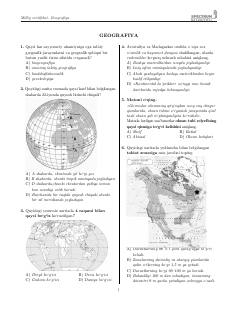

MSGeografiya fanidan milliy sertifikat imtihoni uchun test variantlari to‘plami.
Ushbu qo‘llanma geografiya fanidan milliy sertifikat imtihonlariga tayyorlanish uchun mo‘ljallangan test variantlari va savollarini o‘z ichiga oladi. Kitobxonlar turli geografik jarayonlar, tabiiy zonalar, xarita bilan ishlash va iqtisodiy geografiyaga oid masalalar yechish ko‘nikmalarini oshirishlari mumkin.